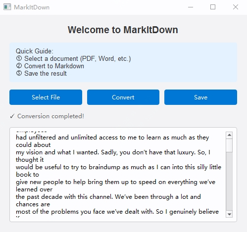

Key Features
Document Conversion
- PDF to Markdown conversion
- Microsoft Word (.docx, .doc) support
- PowerPoint presentations (.pptx)
- Excel spreadsheets (.xlsx)
- Maintains document structure
Smart Recognition
- Built-in OCR technology
- Table structure preservation
- Image extraction & embedding
- List formatting support
- Heading hierarchy preservation
User Experience
- Simple GUI interface
- Drag & drop support
- Preview converted content
- Quick file saving
- Error handling & feedback

Download
Getting Started with MarkItDown
Simple Installation
Three easy steps to get started with MarkItDown document converter:
Windows Users
- Download the Windows GUI package
- Double-click the .exe file
- Follow the installation wizard
macOS Users
- Download the macOS package
- Move to Applications folder
- Launch from Applications
Linux Users
- Download the Linux binary
- Make it executable:
chmod +x markitdown - Run the application
Converting Documents
Using the Graphical Interface
Transform your documents with our user-friendly GUI:
- Open MarkItDown application
- Select your document using the "Select File" button or drag & drop
- Click "Convert" to start the transformation
- Preview the converted markdown content
- Save your markdown file
1. Installation
Download and install the appropriate version for your operating system.
- Windows: Run the .exe installer
- macOS: Open the .dmg file
- Linux: Use the binary directly
2. Basic Usage
Convert files using the GUI:
- Launch MarkItDown
- Click "Select File" to choose your document
- Click "Convert" to process
- Save the resulting markdown
3. Command Line Usage
For advanced users, use the command line:
# Basic conversion
markitdown input.pdf > output.md
# With specific options
markitdown --format pdf input.pdf > output.md
# Process multiple files
markitdown *.pdf --output-dir ./markdownPro Tips
- Use drag & drop for quick file selection
- Preview content before saving
- Check the status bar for conversion progress
- Supported formats: PDF, DOCX, DOC, PPTX, XLSX
Common Use Cases
PDF Documents
# Convert PDF with OCR
markitdown --ocr document.pdf > document.md
# Preserve tables
markitdown --keep-tables report.pdf > report.mdOffice Documents
# Convert Word document
markitdown document.docx > document.md
# Convert PowerPoint
markitdown slides.pptx > slides.md
# Convert Excel
markitdown data.xlsx > data.md